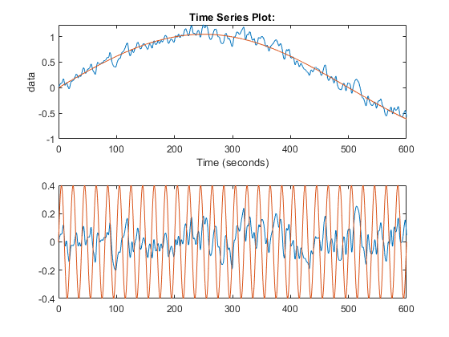
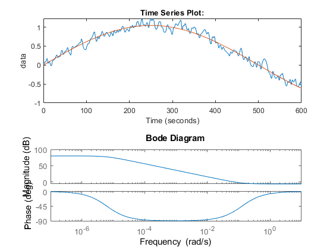
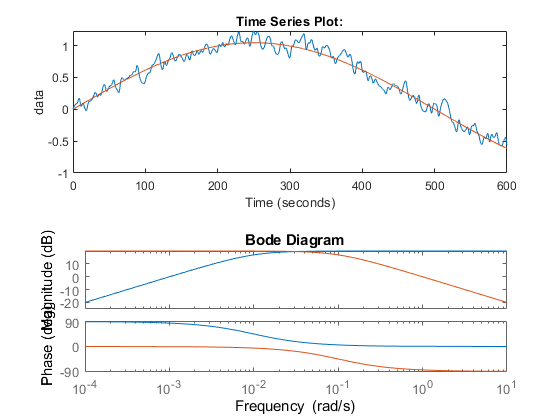

s = tf('s'); load('Assignment_Data_SC42145.mat') [num,den] = ss2tf(A,B,C,D,1); g11 = tf(num(1,:),den); % TF - Blade Picth to Rotational Velocity g21 = tf(num(2,:),den); % TF - Blade Picth to Position [num,den] = ss2tf(A,B,C,D,2); g12 = tf(num(1,:),den); % TF - Torque to Rotational Velocity g22 = tf(num(2,:),den); % TF - Torque to Position % Not needed for now; [num,den] = ss2tf(A,B,C,D,3); g13 = tf(num(1,:),den); % TF - Wind Disturbance to Rotational Velocity g23 = tf(num(2,:),den); % TF - Wind Disturbance to Position G = [g11 , g12 ; g21 , g22]; % G = [g12 , g22 ; g11 , g21]; fr = @(G,f) [freqresp(G(1,1), f) freqresp(G(1,2), f); freqresp(G(2,1), f) freqresp(G(2,2), f)]; rga = @(G) G.*pinv(G.'); % 1/(1-(freqresp(G(1,2), .8*pi) *freqresp(G(2,1), .8*pi))/(freqresp(G(1,1), .8*pi) *freqresp(G(2,2), .8*pi))) Gf = fr(G,0.4*2*pi); % Successive application of the RGA results in an anti-diagonal matrix, % suggesting we should pair RGA = rga(Gf) % RGAi = rga(RGA); % RGAii = rga(RGAi) % f = 0; % G = [freqresp(g11, f) freqresp(g12, f); freqresp(g21, f) freqresp(g22, f)]; % RGA0 = G.*pinv(G.'); % RGA2 = G.*inv(G).'
RGA = -0.0117 + 0.1068i 1.0117 - 0.1068i 1.0117 - 0.1068i -0.0117 + 0.1068i
A2 = A;
B2 = B(:,1:2);
C2 = C;
D2 = D(:,1:2);
Gss = ss(A2,B2,C2,D2);
Z = tzero(Gss); % RHP zeros are NO MORE!
M = 1.8; A = 10^(-4); wb = 0.4*pi*2; wp11 = (s/M+wb)/(s+wb*A); wp22 = .2; wu11 = 0.01; wu22 = (5*10^(-3)*s^2 + 7*10^(-4)*s +5*10^(-5))/(s^2 + 14*10^(-4)*s + 10^(-6)); Wp = [wp11 0; 0 wp22]; Wu = [wu11 0; 0 wu22]; Wt = [];
[Kss,CL,GAM,INFO]=mixsyn(G,Wp,Wu,Wt); Kss = minreal(Kss); K = tf(Kss); Lss = minreal(series(Kss,Gss)); Ltf = tf(Lss); T = feedback(Ltf , eye(2), -1); S = feedback(eye(2),G*K); T = minreal(T); S = minreal(S);
5 states removed. 5 states removed.
p11 = [-Wp ; zeros(2,2)]; p12 = [-Wp*G ; -Wu]; p21 = -eye(2); p22 = -G; P = [p11 , p12; p21, p22];
%Uses the robust control toolbox systemnames ='G Wp Wu'; % Define systems inputvar ='[r(2); u(2)]'; % Input generalized plant input_to_G= '[u]'; input_to_Wu= '[u]'; input_to_Wp= '[r-G]'; outputvar= '[Wp; Wu; r-G]'; % Output generalized plant sysoutname='P'; sysic; P = minreal(P); [K2ss,N2,GAM2] = hinfsyn(P,2,2); K2ss = minreal(K2ss); L2ss = minreal(series(K2ss,Gss)); L2tf = tf(L2ss); T2 = feedback(L2tf , eye(2), -1); S2 = feedback(eye(2),L2tf); T2 = minreal(T2); S2 = minreal(S2);
36 states removed. 6 states removed.
time = out.wtf.time; lf = 2*.5222*sin(2*pi/1000 * time); hf = 0.4*sin(2*pi/20*time); subplot(2,1,1) plot(out.wtf, time, lf) subplot(2,1,2) plot(time, out.wtf.data - lf, time ,hf);
% Beta needs to reject the sine with period 1000s -> 0.00628 rad/s. This % means we want the weight to be around this and much higher at frequencies % higher than that. % We pick a lead compensator with a pole after 0.00628 rad/s -> 0.01 rad/s % The faster pole should be placed so that the weight is high at % frequencies that should be rejected by tau_e action. We pick 0.2. Tb = 1/.08; a = 0.05; wu11 = (Tb*s +1)/(a*Tb*s +1); % Tau needs to kick in for high frequencies. Looking at the thing, it looks % like high frequencies should be at about 10s -> 0.628rad/s. This means we % want the weight to be around this and much higher at frequencies lower % than that. Tt = 1/.02; b = 1/a; wu12 = b*(Tt*s +1)/(b*Tt*s +1); wu11 = s/(s+.01)*10; wu12 = 1/(s+.1); M = 2; A = 10^(-4); wb = pi*2/100; wp11 = (s/M+wb)/(s+wb*A); bode(wp11);
bode(wu11, wu12)
Wp = wp11; Wu = [wu11, wu12]; G = [g11 , g12]; Gdss = ss(G); % P = [Wp, Wp*g11 , Wp*g12 ; 0, wu11, wu12; 1, g11, g12]; %Uses the robust control toolbox systemnames ='G Wp Wu'; % Define systems inputvar ='[d(1); u(2)]'; % Input generalized plant input_to_G= '[u]'; input_to_Wu= '[u]'; input_to_Wp= '[d+G]'; outputvar= '[Wp; Wu; d+G]'; % Output generalized plant sysoutname='P'; sysic; P = ss(P); P = minreal(P); [Kdss,Nd,GAMd] = hinfsyn(P,1,2); disp(GAMd); Kdss = minreal(Kdss); Ldss = minreal(series(Kdss,Gss));
17 states removed.
0.6313
5 states removed.